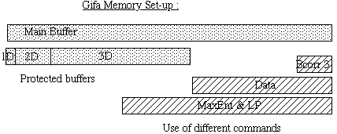

The Gifa program holds all the data in one single large memory buffer. This buffer is used for several purposes, and may be divided into smaller pieces. The size of this buffer is displayed when entering the program, or with the CONFIG command. There is no way to use a larger data-set than this memory size but recompiling. This buffer is used for 1D as well as 2D and 3D operations. In all cases the whole buffer is available. However, when moving back and forth between 1D, 2D or 3D mode, or when using memory intensive commands, only partial regions of the buffers are protected. The size of these protected regions are given with CONFIG command. The idea is that you can eat-up all the available memory for a single data-set if you wish, but that certain operations will be forbidden on it.
For instance, you can handle a full
memory 2D data-set if you do not wish to do 3D. However, when working
in 3D, if you zero-fill a 2D plane extracted from the 3D, over the
protected area size for 2D, you will destroy a part of the 3D buffer.
You will sometime get the question : 'This will overflow the xx
buffer, Ok?' when there is any risk of destroying one of the buffer.
This question is not asked during macro execution, where you are
supposed to know what you are doing.
With the current set-up, the
size of the protected 3D area is typically 1/2 of the size of the
main buffer, the larger protected 2D is 1/4 of the larger 3D, and the
protected 1D is 1/4 of the larger 2D.
On another hand, certain operations in Gifa need large work storage, and will use the top of the main buffer for this; thus being incompatible with a large data-set. These commands are : Maximum Entropy, the linear prediction package, the automatic baseline correction BCORR 3 and the PUT DATA and GET DATA operations. However the amount of memory used depends on the command. The Maximum Entropy and Linear Prediction (but not the BURG, READC and WRITEC commands which are in-place) will use the 3/4 of the main buffer so only 1/4 will be left for regular processing; this limitation is independent from the size of the larger data-set to be processed by MaxEnt which is 1/8 of the main buffer. The PUT DATA and GET DATA command will use 1/2 of the main buffer. The BCOR 3 command will need only 1/8 on the top of the main buffer. With all these commands the remaining of the main buffer can be safely used. If you try one of these command with a too large data-set in the buffer, the data-set will be corrupted on the overlapping region.

If you feel that the program is too small for your needs, contact the person who installed the program on your machine, and ask him to install a larger definition of the program . Definitions for 1 Mega, 4 Mega and 16 Mega are in the distribution.